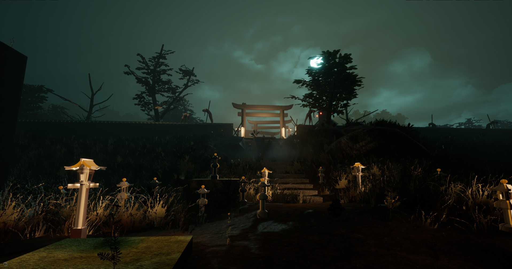
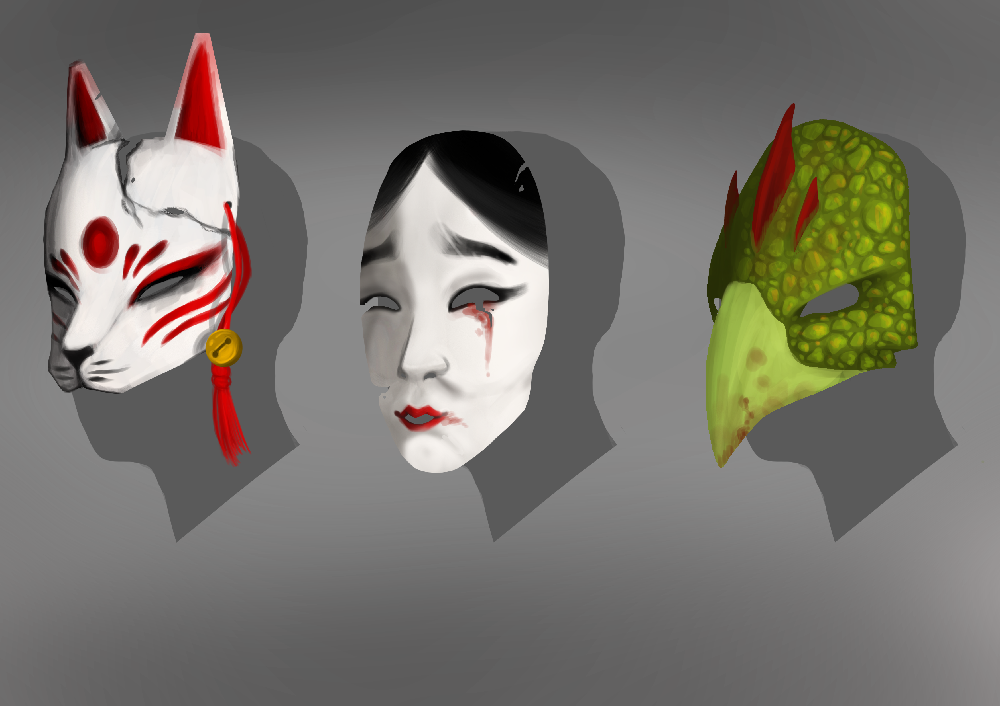
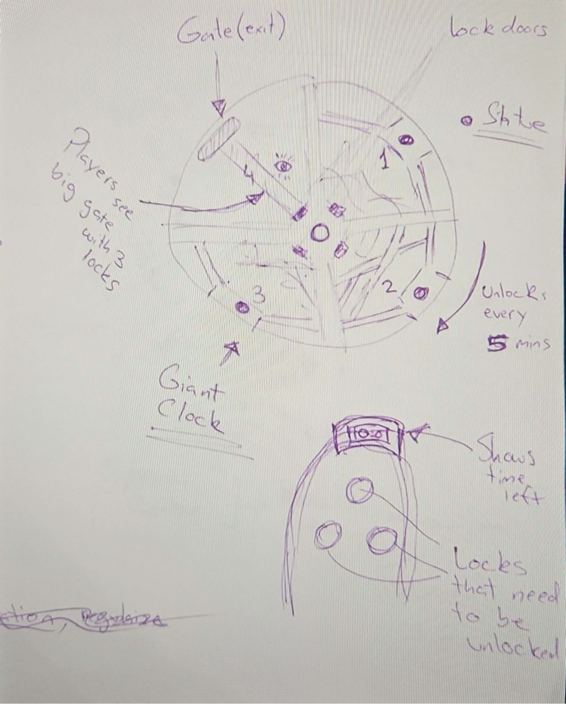
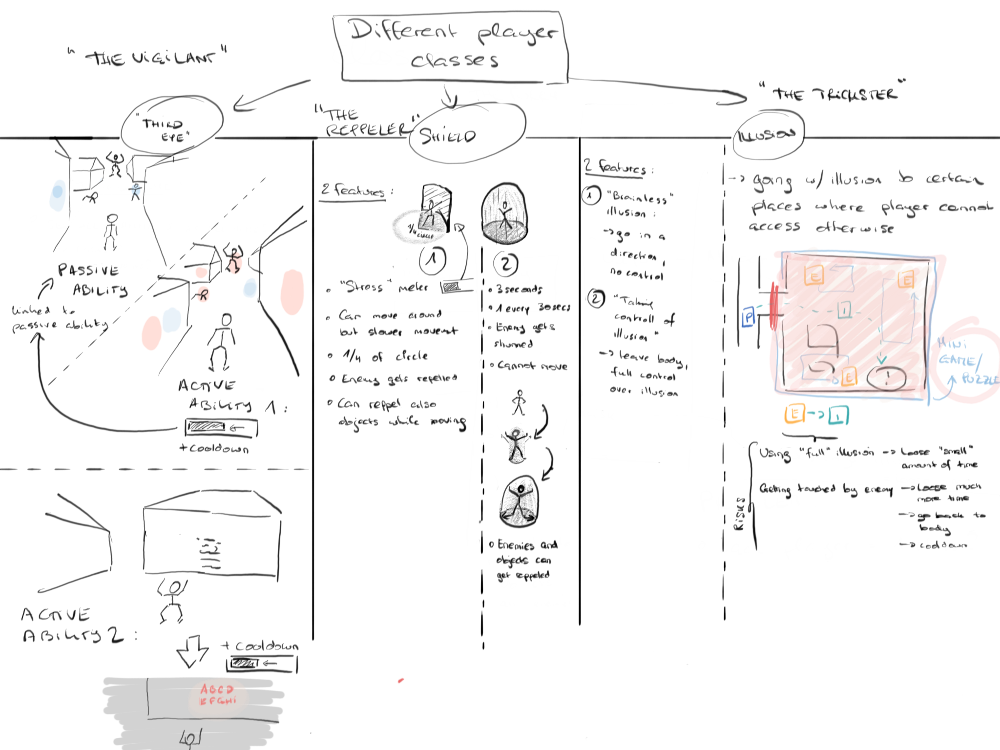

Triaed
Triaed is a psychological horror, first-person multiplayer game. Where four people that are on the verge of death
due to an accident that connects them in some way.
They all are exposed to what people call “Near-death experience”, sending them into a wicked parallel version of their world.
Without any knowledge of what happened or where they are, these four individuals must find a way out before time runs out or else be trapped there forever.

My Role
During this project I worked as Lead Game Designer and Scrum Master. I was responsible for the development of the
Game Design Documentation, Flow Charts, organising Sprint Meetings and documenting the results.
I was also in charge of the communication between both programmers and artist, to ensure that both sectors
well informed of each others progress.

The game orbits around player to player cooperation. There are a three main classes in the game that will
be given at random to force players to adapt and be able to play any of the classes.
However for private matches, players will be able to directly choose. Each class grants the player a unique
sets of abilities that will allow them to complete quests or work around obstacles.
These are:
The Repeller
The Trickster
The Vigilant

Enemies will have different version of a behavioral tree and will interact differently with each player's abilities.
They will also have their own set of weaknesses and strength that players will need to exploit to win the game
Yokai
Onibi
Amanojaku
Oni
Players are considered prey throughout the entirety of game;
Enforced throughout the experience by giving them abilities that do not empower them,
while displaying scenarios, atmosphere and tone/mood that oppress them.
Cameras that are close and personal. Surroundings that seem menacing and unforgiving,
as well as having creatures that will be around hunting for you and cannot be killed or vanquished.
There will be a timer that will rush players to finish the game, the timer itself will work as the player’s health bar.
Once the timer reaches zero, that player will be stuck in this world forever.
Each player will have their own timer and there will be instances in which they can add time or loose it.
For example saving a lost soul (npc with sidequests that reward players) or giving away time to a player that lost their own.
You must get out before your time reaches zero or you will lose the game.
The GDD is kept private for future use, but feel free to contact me about any details.
The Map and Winning conditions

The map will act as a giant clock, every certain amount of time a new area will be unlocked, until the last one,
being a massive gate, that the players must have collected certain ammount of keys (obtained in other areas) to open it.
After reaching the gate, players will have to fight the Gate Keeper which will be a massive entity that will try to stop them.
The players wont be able to attack the creature directly but will be able to use their surroundings and abilities to defeat it.

The Repeller
This class allows player to display a shield that will protect them from certain types of enemies,
as well as allowing the carrier to push certain objects around or act as a bridge for other players to walk on top of.
A much stronger version can also be used to encapsulate the player and protect them for every direction.
The Trickster
This class allows players to create a clone of themselves that will walk in a straight line, causing enemies to chase it instead of them.
However it will only work effectively if the monster does not see the player cast it.
Alternatively, the player can choose to control the clone while remaining innactive, thus allowing them to move around and interact with the world without suffering any effects from the world around them.
However, that will leave the player exposed and enemies could hurt a now unattended body. Use with care.
The Vigilant
This class will allow players to see through walls to be able to see players (or an arrow towards their direction if they are too far) and
enemy silhouette within certain radius. In addition, they will be able to distinguish fake interactibles (that could damage players)
from the real ones and find secret writings and objects that the other players cannot see or interact with.
The main challenge that arose during this project was due to the restrictions imposed by the government to combat COVID-19.
Not being able to communicate physically led to a slower pace which affected the ammount of content that we were able to prepare for the
final presentation.
In addition to this, there where times where certain group members couldn't work on the project which led to other people having to cover for them.
For me specifically, I had to code certain systems to be able to match the deadlines, as well as, work in other areas which reduced the time I could spend working on design, balancing and testing.
Learning Outcomes
This project further developed my time management skills and boosted my adaptability, allowing me to quickly rescope the project's objectives/targets when needed.
It also helped me to be more effective when planning out future projects, going from core, basic and simple tasks first and then add up content when time allows it.